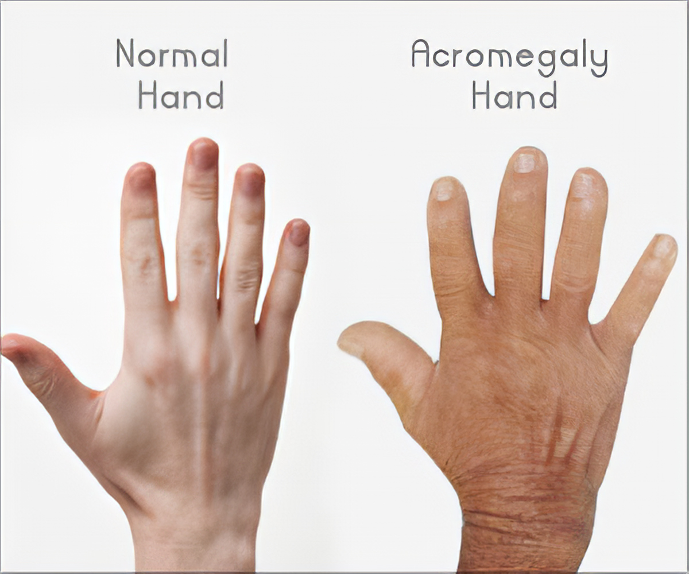

Acromegaly

SYMPTOMS:
Symptoms include:
- Hands and feet getting larger (you may notice your ring or shoe size increasing over 10 to 15 years)
-
Jaw and forehead getting larger
-
Painful, swollen (arthritic) joints and back pain
-
Thickened skin and skin tags
-
Oily skin
-
Increased sweat
-
Deepening voice
People with acromegaly often develop other medical conditions, such as:
- Carpal tunnel syndrome (stiffness and pain in the wrist that can cause finger numbness)
-
High blood pressure
-
Heart and blood vessel disease
-
High blood sugar or diabetes
-
Noncancerous growths, or polyps, in the colon
-
Sleep apnea (interrupted breathing while you sleep)
-
Vision problems
CAUSES
- In about 95% of cases, a noncancerous (benign) pituitary tumor called an adenoma causes the pituitary gland to make too much GH.
-
GH, in turn, causes the liver to make too much of a hormone called insulin-like growth factor-1 (IGF-1). This hormone signals bones and other tissues to grow. In rare cases, a tumor in another part of the body causes acromegaly.
-
In most cases, doctors don’t know what causes these slow-growing tumors to form. Acromegaly and pituitary adenomas are not passed down in families.
DIAGNOSIS
- Blood test: We take a blood sample to check your levels of growth hormone and IGF-1. High levels of both may suggest acromegaly. You may need more tests for a firm diagnosis.
-
GH suppression test: After you fast overnight, we give you a sugary drink and then take blood samples over two hours. We measure your blood sugar, GH and IGF-1 each time. If GH is high, it may be a sign of acromegaly.
-
Imaging: We take an MRI to see the size and location of any unusual pituitary growth. Imaging can also show if a tumor is affecting your vision.
-
Vision testing: A neuro-ophthalmologist, a specialist in the connection between the brain and optic nerves, may check your vision.